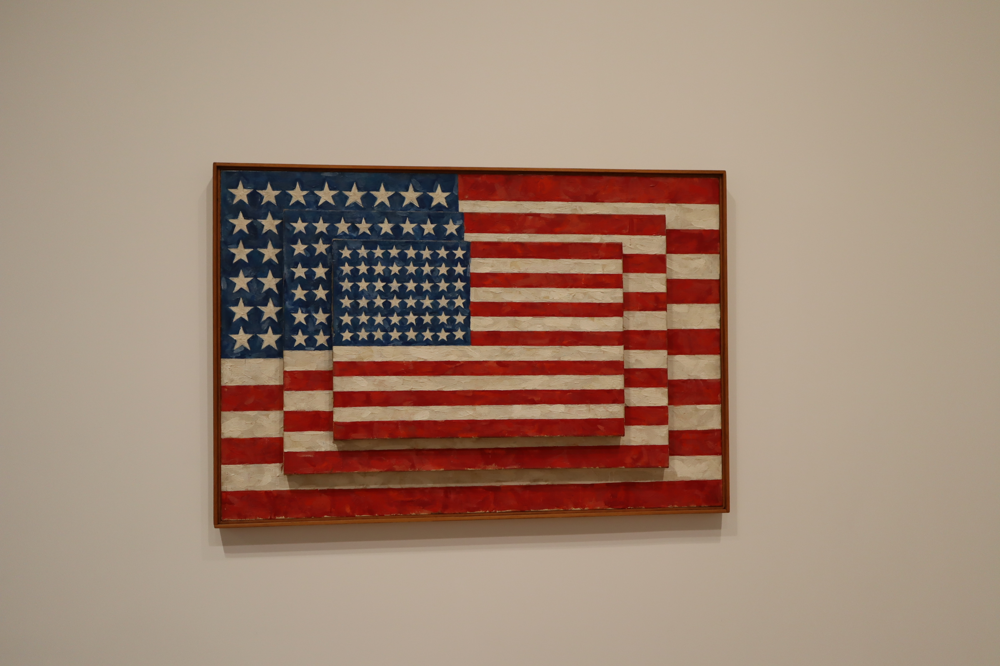
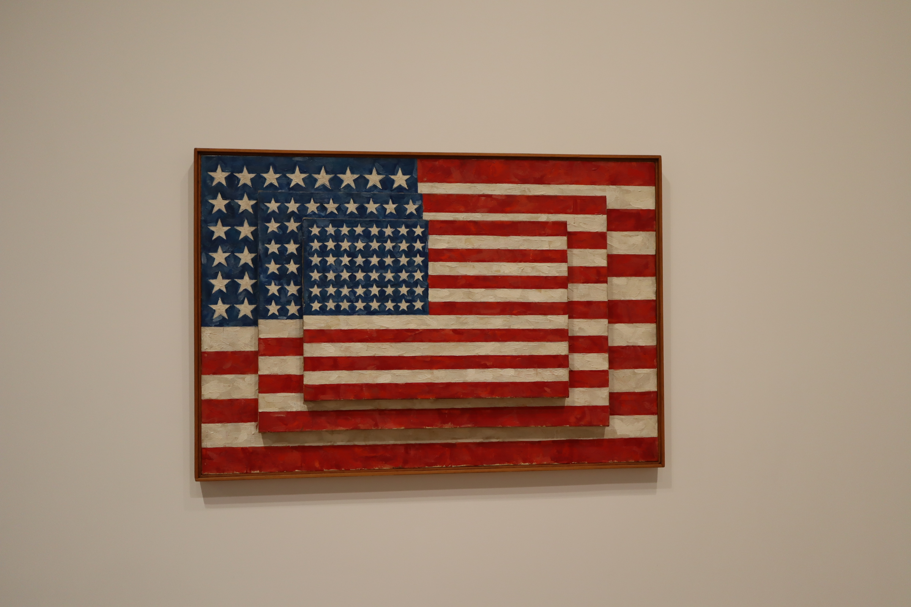
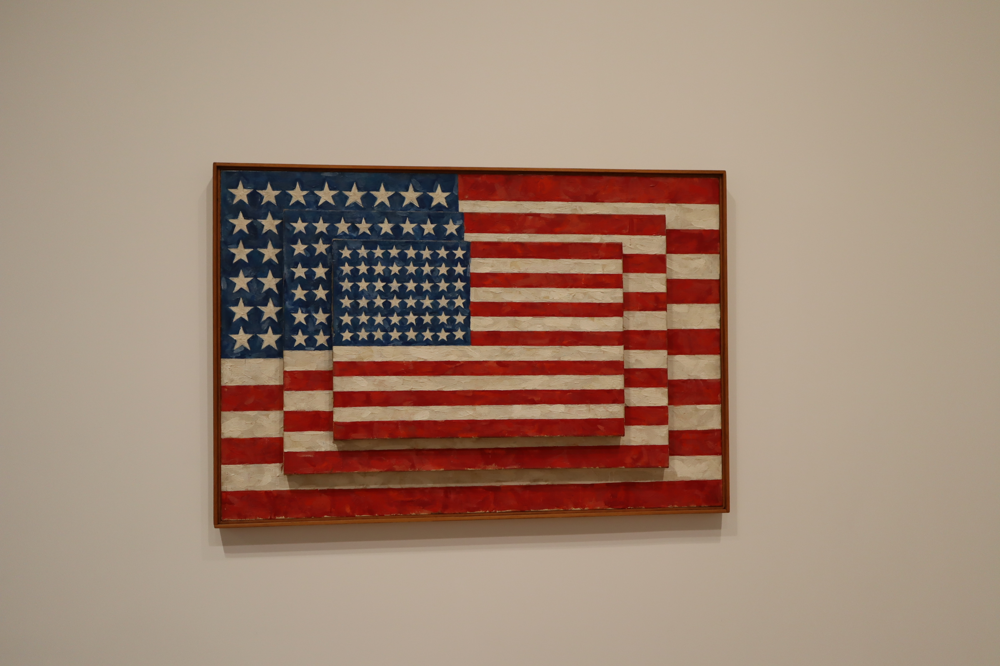
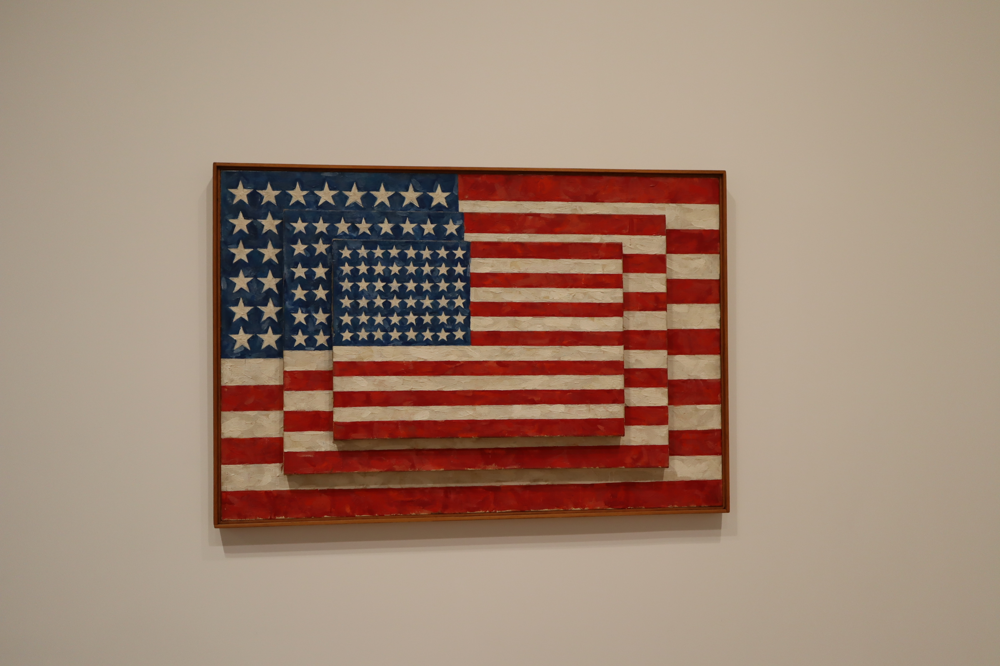

 

뉴욕의 하늘을 찌를듯한 고층건물보다 이렇게 낮고 색깔 다양한 건물이 더 좋아
인턴은 제게 큰 울림을 준 영화인데요, 작품에서 Jules와 Ben이 커피를 픽업했던 곳에 가봤어요

NEWYORK 글씨가 예뻐서 가져왔어요
저는 뉴욕 살면서 이곳 리틀 아일랜드에 가장 많이 갔어요

뉴욕에 있는 모마랑 뮤지엄들 많이 구경했어요. 제값 안주고 볼 수 있는 방법 많으니까 꼭 홈페이지 찾아보기!
8번가 liberty 베이글에 가서 rainbow with blueberry creamcheese를 말해보세요

스파이더맨 영화에서 빠질 수 없는 곳이에요. Peter의 전 직장이기도 했죠?!

스파이더맨은 뉴욕에서 정말 많이 찍었어요. 그래서인지 스파이더맨 영화를 볼 때마다뉴욕이 너무 반갑고 그리워요
제가 좋아하는 그릇 가게인데요, 문구가 너무 귀여워서 가져와봤어요